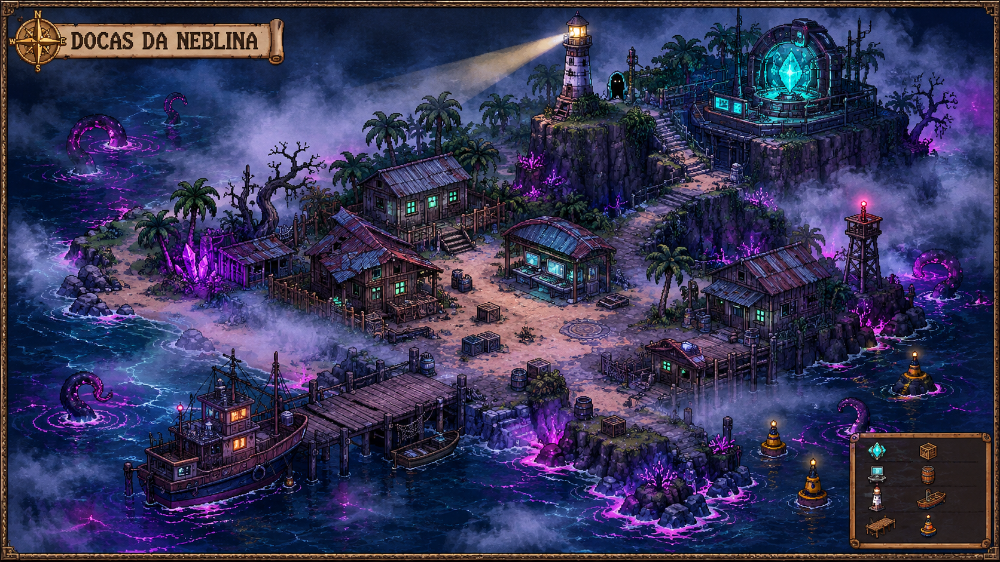

Três atlas RGBA, 30 peças independentes, luzes e atmosfera em tempo real. Cais, barcos e mar preservados. Prévia isolada: não lê nem grava a partida. A referência abaixo permite conferir proporções e as diferenças restantes na costa preservada.
A pintura tem enquadramento e costa diferentes da base animada preservada. Não é uma promessa de igualdade pixel a pixel ou de resolução superior à fonte.

Notas técnicas e validação